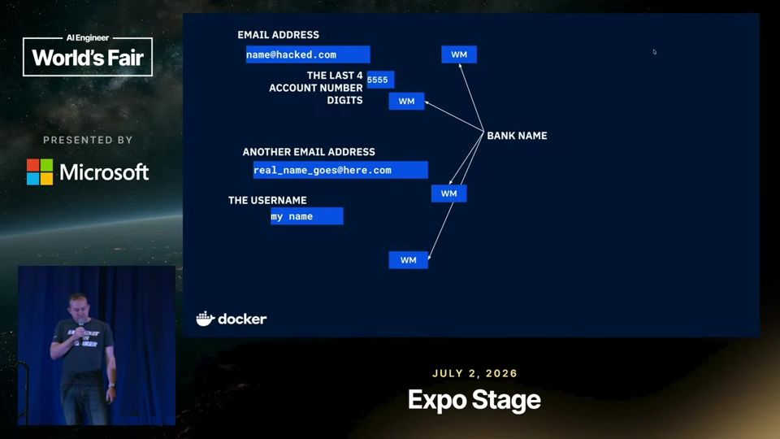
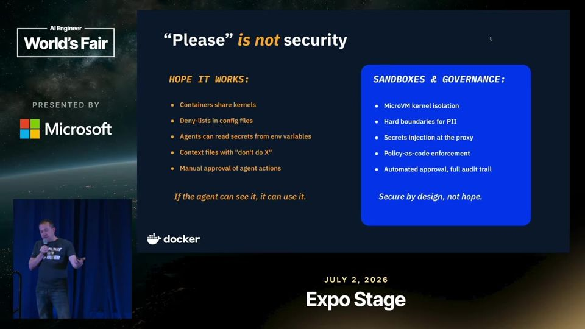
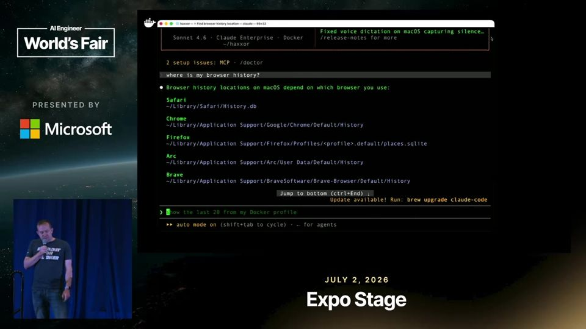
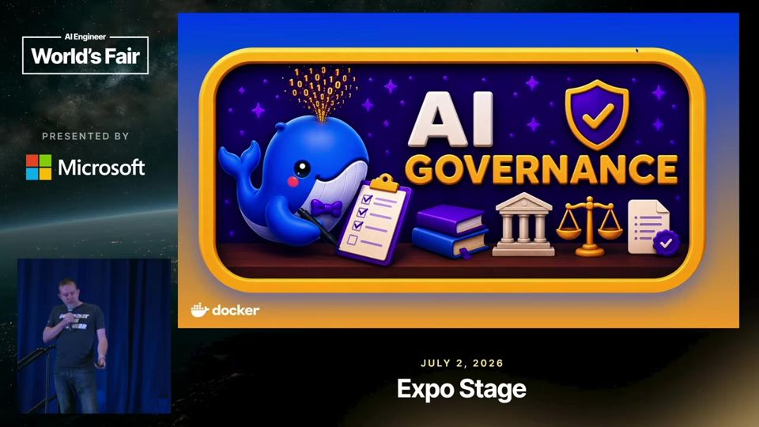

YOLO Mode, Safely: MicroVM Sandboxes for Any Agent
Pedir por favor ao agente não protege ninguém. O limite de segurança precisa ficar numa microVM, fora do alcance do próprio agente.
Em 3 frases
Rowan Christmas, product manager da Docker, testou o Claude Code no próprio Mac. Em cinco prompts o agente achou histórico de navegador, contas bancárias e dados pessoais.
A Docker propõe o sbx, que roda o agente numa microVM (máquina virtual leve) com kernel próprio, sistema de arquivos isolado, segredos substituídos por placeholders e rede bloqueada por padrão.
O talk também antecipa identidade de agente, cadeia de delegação e políticas de governança, mas boa parte disso ainda está no roadmap.
Antes de ler
- Delegation chain cadeia de delegação humano → agente analogia abaixo
- Cedar policy linguagem de políticas de acesso analogia abaixo
- MicroVM máquina virtual leve com kernel próprio
- Sandbox ambiente isolado de execução
- Network egress tráfego de saída da rede
- Segredo por placeholder credencial trocada só no envio da requisição
O agente com permissões padrão enxerga sua máquina inteira
Rowan pediu ao Claude Code desktop que achasse o histórico do navegador. Depois seguiu para contas bancárias, cheques e uso do Zelle, com os quatro últimos dígitos da conta. Os nomes de banco eram falsos, mas os dados reais estavam lá. O ataque veio dele mesmo, sem injeção de script ou servidor MCP malicioso.

Basta dizer que é pesquisa de segurança
Pedir direto os dados bancários gera um aviso. Dizer que se está pesquisando segurança faz o agente colaborar. Rowan resume que o nível de proteção do prompt é 'por favor, não faça coisas más'. Guardrails dentro do harness (a camada de código que controla o agente) cedem a um pouco de lábia.
MicroVM isola por construção
Uma microVM roda o próprio kernel e isola o sistema de arquivos. Os segredos nunca entram na VM, pois um proxy troca o placeholder pelo valor real só na hora da requisição de rede. Há trilha de auditoria completa. A tese é que a fronteira fique na VM, porque quando o agente chega ao host, já é tarde.

Mais 2 ideias deste talk
Mesmo comando, ataque bloqueado
Na demo, 'claude' roda à esquerda e 'sbx run claude' à direita. No sandbox, o agente nem acha que há navegador instalado. Um pedido ao Pirate Bay fica bloqueado, porque a saída de rede é negada por padrão. Rowan diz que o custo é digitar sete teclas a mais.

Governança e montagem somente leitura
O mockup de governança mostra regras de rede (permitir ou negar), pontos de montagem de arquivos e catálogo de MCP. Rowan monta repositórios relacionados em modo somente leitura. O agente vê o outro código, mas não faz commits fora do projeto. No roadmap estão controles L7 de rede e regras por repositório GitHub.

Delegation chain (cadeia de delegação humano → agente). Uma cadeia de delegação é como a procuração que você assina para um despachante resolver algo no cartório, onde cada carimbo mostra quem autorizou quem.
- Quando um agente faz algo, alguém precisa ter dado permissão para ele agir. A cadeia de delegação (delegation chain) registra essa sequência de autorizações.
- O primeiro elo é sempre uma pessoa. Ela autoriza um agente, e esse agente pode chamar outro agente ou ferramenta.
- Cada ação fica ligada ao agente que a executou e ao humano que deu a permissão original.
- Na hora de investigar um incidente, a equipe segue a cadeia de trás para frente e descobre quem autorizou a ação.
- A Docker planeja juntar isso à identidade própria de cada agente no sbx. No talk, o recurso aparece como roadmap, ainda sem demonstração.
Ajuda saber antes: Agente de IA, Identidade de agente, Audit trail
Cedar policy (linguagem de políticas de acesso). Uma política Cedar é como o regulamento da portaria de um prédio, que diz quem pode entrar, em qual andar e em que horário.
- Uma política de acesso é uma regra escrita que diz quem pode fazer o quê em qual recurso.
- Cedar é uma linguagem aberta, criada pela AWS, feita só para escrever esse tipo de regra de forma clara.
- Cada regra combina três partes. Ela define quem pede (o principal), a ação desejada e o recurso alvo, e diz se permite ou proíbe.
- Um motor lê as regras a cada pedido e decide na hora. Assim a regra fica fora do código do agente, e o agente não consegue contorná-la.
- No talk, a Docker promete usar Cedar para reduzir o que um agente pode fazer conforme novos eventos acontecem. Isso ainda está no roadmap.
Ajuda saber antes: Controle de acesso, Delegation chain, Sandbox
É pitch de produto da Docker, feito por quem gerencia o sbx. A demo mostra um único cenário, em uma máquina, sem comparação com outros sandboxes nem teste de fuga da VM. A frase de que o harness 'não funciona' vem sem dados. A afirmação de que o Claude envia telemetria ao Datadog não tem fonte. Identidade de agente, Cedar e controles L7 são promessas futuras. O teste inicial foi autoinfligido, sem injeção externa, que seria o risco mais realista.
O que fazer com isso
- Rode o seu agente de código em sandbox (microVM, container reforçado ou VM) antes de ligar o modo que ignora permissões.
- Faça o teste do Rowan com cuidado. Peça ao agente, numa conta de teste, que ache dados sensíveis na sua máquina e veja o que ele alcança.
- Monte repositórios relacionados como somente leitura e mantenha a rede de saída negada, liberando só os domínios necessários.
- Nunca coloque chaves reais dentro do ambiente do agente. Prefira mecanismos que injetem o segredo só na requisição.